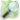

Category:Casino Baden-Baden
Jump to navigation
Jump to search
| Object location |  | View all coordinates using: OpenStreetMap |
|---|
casino | |||||
| Upload media | |||||
| Instance of | |||||
|---|---|---|---|---|---|
| Location | Baden-Baden, Karlsruhe Government Region, Baden-Württemberg, Germany | ||||
 | |||||
| |||||

Subcategories
This category has only the following subcategory.
I
Media in category "Casino Baden-Baden"
The following 13 files are in this category, out of 13 total.
-
Baden Baden - Kurhaus Casino.jpg 3,872 × 2,592; 10.55 MB
-
Baden baden 2016 0010.jpg 3,542 × 2,116; 2.26 MB
-
Baden-Baden-Kurhaus-Casino-Aussenbereich-02-2017-gje.jpg 5,184 × 3,456; 4.3 MB
-
Baden-Baden-Kurhaus-Casino-Aussenbereich-04-2017-gje.jpg 5,184 × 3,456; 5.64 MB
-
Baden-Baden-Kurhaus-Casino-Aussenbereich-06-2017-gje.jpg 5,184 × 3,456; 4.38 MB
-
Baden-Baden-Kurhaus-Casino-Aussenbereich-08-2017-gje.jpg 5,184 × 3,456; 3.51 MB
-
Casino - Baden - Baden - panoramio (1).jpg 4,608 × 3,456; 8.16 MB
-
Casino Baden-Baden.JPG 4,608 × 3,456; 3.74 MB
-
Das Spiel mit Zahlen und Farben - panoramio.jpg 3,030 × 4,040; 5.97 MB
-
Spielball - panoramio.jpg 4,608 × 3,456; 5.05 MB
-
Spielbank Baden-Baden - panoramio (1).jpg 4,608 × 3,456; 9.56 MB
-
Spielbank Baden-Baden - panoramio.jpg 3,906 × 3,040; 6.6 MB
-
Spielchip - panoramio.jpg 4,608 × 3,456; 5.16 MB